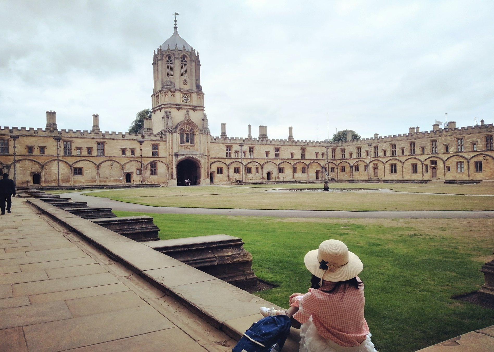
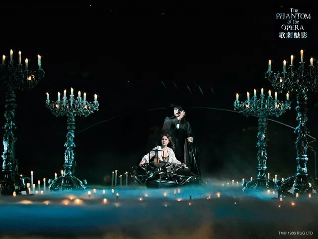

Cambridge Summer Exchange Program
The Cambridge, Just a Fantastic Start.
Cambridge, a poetic name, a sacred academic place which is admired by many diligent students, before I went to Britain, I longed for Cambridge and just had some ambiguous imaginations about it. I don’t know how exquisite it is. All praise just comes from Xu Zhimo's poem "Gentle me away, just as I gently came......" Now reviewing my study tour again, it is really memorable and I have harvested countless knowledge and warmth, more importantly, to some extent, it has promoted my academic development and clarified my life direction!
1. Life and Travel
In the morning, accompanied by the refreshing breeze, you will see many Cambridge students and white-haired professors who are running for fitness. The clerks are working hard in the beautifully decorated shops. A few bunches of sunshine slips into the new windows, and the goods in the store also seem gorgeous. If you walk along the quiet street, you may find several tall and quaint college buildings surrounded by old lush trees and fresh pleasant flowers. At the moment, the thick bells of Sidney Sussex College sounded and blended with harmonious scenery which was like tasting a cup of cappuccino in the morning.
Around 9 o'clock in the morning, Cambridge began to become bustling, the busy buses in the narrow streets seems very tall, many bicycles are placed on the street. Everyone is busy with their own things, footsteps or rush or leisurely, freedom and harmony. Our lunch didn't have to be eaten at the college, so we enjoyed the Italian, French, Japanese, Thai, Chinese and English dark dishes with great interest. What is even more touching is the student apartment in Cambridge, which is perfect with advanced automatic sensing technology and comprehensive user-friendly equipment. When the afternoon sun is just right, you can also make a cup of milk tea and sit in the garden in front of the apartment to study and work. The quiet and comfortable environment is enough to activate you lots of inspirations!
During two days of our tour we went to visit Oxford and London. Oxford's architectural layout is somewhat scattered, but it is still magnificent, and many famous buildings are also the location of film Harry Potter.
London is even more fascinating, full of international atmosphere. We visited the British Museum, after watching the Parliament Building, Big Ben, London Eye, Downing Street on the bus. In the evening, the curtain of the opera "The Phantom of the Opera" slowly opened, the perfect music and the unparalleled stage effect both brought us endless emotional waves, which is still unforgettable.
2. Study and Assessment
The details of life and travel are enough to make me understand the exquisite elegance of Cambridge, and in the lectures and courses, I can better discover the essence of teaching concepts of Cambridge. In classes, there are a lot of interactions between professors and students (this also greatly improves my oral English), the courseware is simple and clear and many exercises are interspersed in the class.Firstly the professor will encourage you to explore the solutions by yourself and then exchange ideas with each classmate so that even the most difficult algorithm will be thoroughly understood and used flexibly in the process of finding faults and solving problems. In addition, we have a wide range of courses besides some professional knowledge, there will be astronomy, psychology, golf, cultural practices, art and other extended courses. From this, you can find the students that Cambridge hopes to cultivate are comprehensive talents, who have self-cultivation, taste, morality and ability. What’s more, the colleges in Cambridge do not hesitate to invest in the development of students, and truly teach students in accordance with their aptitude.